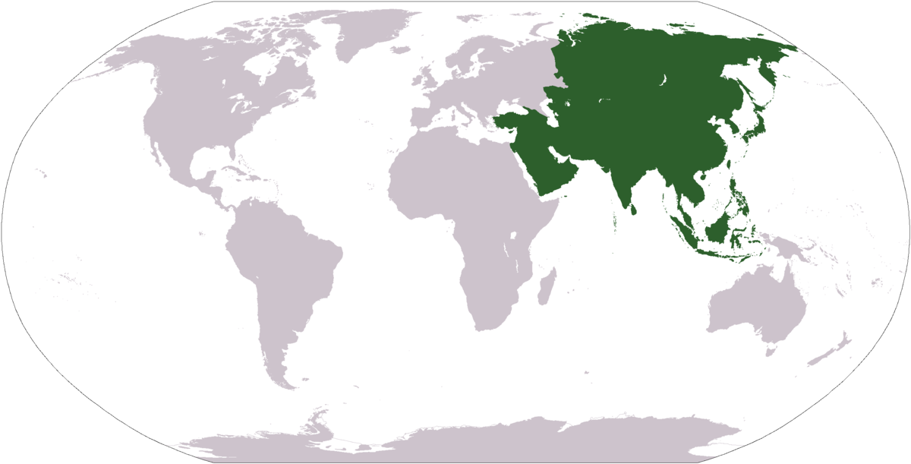
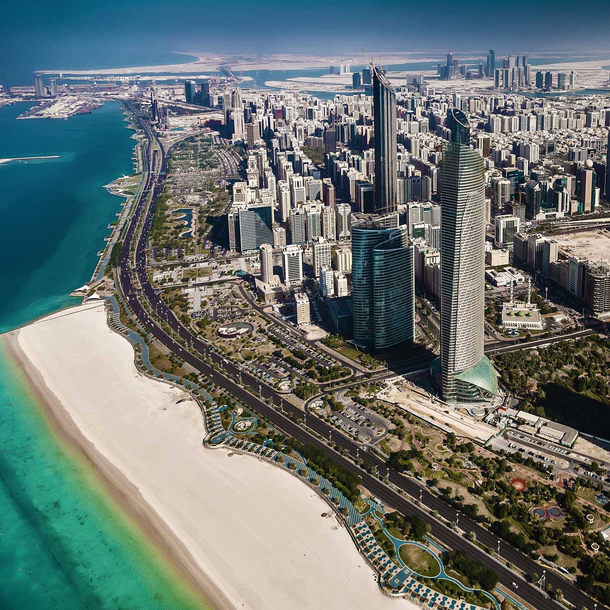
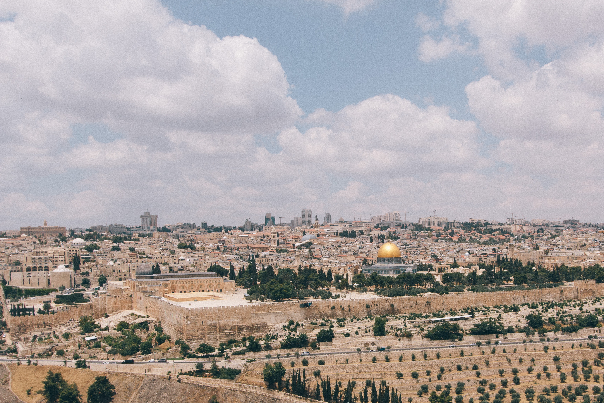
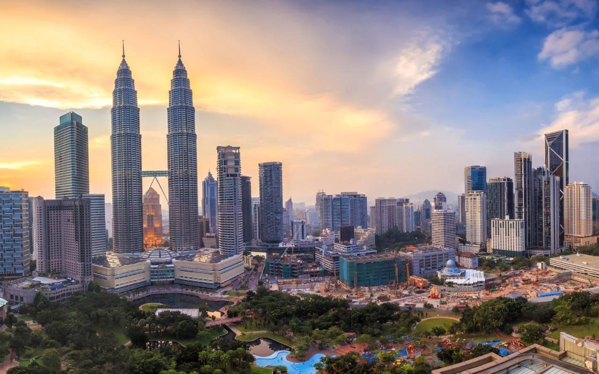

Asia
Asia is Earth's largest and most populous continent, located primarily in the Eastern and Northern Hemispheres. It shares the continental landmass of Eurasia with the continent of Europe and the continental landmass of Afro-Eurasia with both Europe and Africa. Asia covers an area of 44,579,000 square kilometres, about 30% of Earth's total land area and 8.7% of the Earth's total surface area. The continent, which has long been home to the majority of the human population, was the site of many of the first civilizations.
Abu Dhabi
Abu Dhabi is the capital and the second most populous city of the United Arab Emirates (after Dubai). It is also the capital of the Emirate of Abu Dhabi, which is the largest of the UAE's seven emirates. The city of Abu Dhabi is located on an island in the Persian Gulf, off the central western coast.
Bangkok
Bangkok is the capital and most populous city of Thailand. It is known in Thai as Krung Thep Maha Nakhon or simply Krung Thep. The city occupies 1,568.7 square kilometres in the Chao Phraya River delta in central Thailand, and has a population of over eight million, or 12.6 percent of the country's population.

Jerusalem
Jerusalem is a city in the Middle East, located on a plateau in the Judaean Mountains between the Mediterranean and the Dead Sea. It is one of the oldest cities in the world, and is considered holy to the three major Abrahamic religions—Judaism, Christianity, and Islam. During its long history, Jerusalem has been destroyed at least twice, besieged 23 times, captured and recaptured 44 times, and attacked 52 times. The part of Jerusalem called the City of David shows first signs of settlement in the 4th millennium BCE.
Kuala Lumpur
Kuala Lumpur, is the national capital and largest city in Malaysia. As the global city of Malaysia, it covers an area of 243 km2 and has an estimated population of 1.73 million as of 2016. Greater Kuala Lumpur, also known as the Klang Valley, is an urban agglomeration of 7.25 million people as of 2017. It is among the fastest growing metropolitan regions in Southeast Asia, in both population and economic development.
